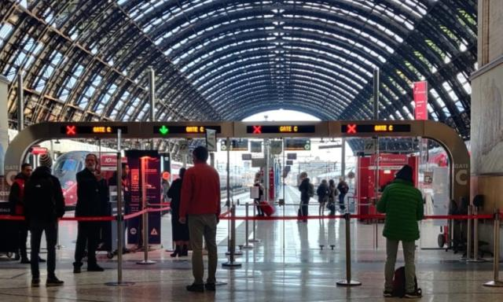
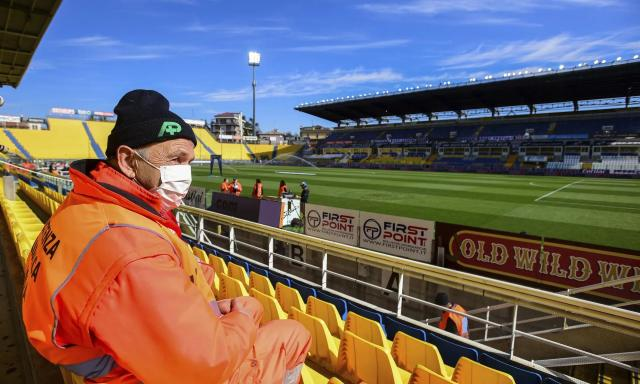

疫情爆发十余市镇封城！意大利艰难寻找“零号病人”
原文链接 备份链接 伦巴第大区。图片来源：天空新闻截图 记者：安晶 “ 虽然前三例病例出现在罗马，但疫情并没有在罗马爆发，而是发生在伦巴第大区。 ” 面对新型冠状病毒肺炎疫情的爆发，成为欧洲重灾区的意大利宣布北部11个市镇进入封城隔离，违 …
体坛周报全媒体驻意大利记者 陈硕麟
3月7号晚间，意大利新冠病毒累计感染病例逼近6000大关，当天骤增的1200余例新确诊病例，也比前日高出一倍。于是，意大利政府将红色封锁区域的范围扩大，整个伦巴第大区都被封锁，除了紧急情况外，其余人员皆不可随意进出。
除了受疫情影响最严重的伦巴第，北部还另有14个省份被列为红色区域，大约1600万人，至少在4月3号之前都将在封锁中度过，这占了全意大利人口的四分之一还多。体育馆、博物馆、滑雪场等公共场所也被要求关闭，在餐厅和酒吧，人们被要求互相保持至少一米的距离，否则店面就有因违反法令遭关门之虞。

我身处布雷西亚，截至写这篇文章时，布雷西亚全省共有413例确诊病例，市区本身的病例并不占大头，但省内几乎每个小镇都有若干确诊病例，和其他省份一样，病毒早已经在各个角落进行着社区传播。布雷西亚是伦巴第乃至整个意大利抗疫的桥头堡——这里的医疗能力在大区里首屈一指，有不少病患从其他地区被转到这里接受治疗。
我的居住地距离布雷西亚最大医院只一步之遥，平日里几乎每天都能听到救护车轰鸣着警笛呼啸而过的声音，而在疫情期间，再听到这样的声音，难免让人感觉忐忑，救护车里拉着的人是否正受着病毒的侵袭？医院又能否给予其足够的医疗支持？有一天半夜，我在迷迷糊糊中被救护车的警笛声吵醒，不是一辆，而是一队，持续了数分钟才停止。
伦巴第大区的医疗资源非常紧张，在一个星期之前，医院的负载量已经接近饱和，而随着病例愈发增多，医疗资源超负荷运转也是严峻的现实。布雷西亚市医院的工作人员之前曾表示院内人员的防护用具短缺，实际上不只是布雷西亚，整个伦巴第地区都在面对这一情况，已经有相当一部分医护人员因为防护不足造成感染，让原本就已经捉襟见肘的人手显得更为紧张。
之前在国内疫情爆发阶段，其他省市向湖北省派遣了数万名医疗人员。意大利不拥有这样的大后方，只能自己想办法挖掘更多可用资源，比如让实习生尽快进入一线，并计划召回20000名已经退休的医护人员（包括5000名医生和15000名护士）紧急支援。
第二个计划招致了较多质疑，意大利人在关键时刻的责任心并不令人担忧，但新冠病毒在意大利蔓延，老年人无疑是最危险的一个群体，退休医护人员如果回归岗位，一来受感染的风险提升，再者需要面对每天12至14小时的高强度工作，对他们的身体状况也是一个考验。

封锁令是在3月7号的晚间发出的，但到午夜时分才正式施行，中间留有两三个小时的时间差。也有一些人选择趁这段时间从封锁区内“外逃”，另外，封锁令并不影响火车站和机场，虽然有部分出国的航班和车次被取消，还是有很多人成功挤上了当夜的末班车离开，意大利的夜间车次人数一般不多，最起码乘客可以轻松地找到座位，但昨天驶离米兰的火车，连过道都被挤占得满满当当，有的人甚至不惜先抢上车厢，然后再补交数倍于票价的罚款。
这些人的目的地大多是意大利中部和南方，南方的疫情较北方而言轻得多，数个大区的病例只有个位数，莫利塞和巴西利卡塔等南方大区，因为经济实力孱弱，在意大利的行政区划中毫不起眼，甚至不少意大利人也不知道这些大区的首府在哪，本地稍有能力的年轻人也大多北上寻找工作机会。戏剧性的是，疫情汹涌的当下，高傲的北方人对他们平日里看不上眼的南方城市趋之若鹜。
这也激起了一些人的不满，尤其是南方人。在推特上，有人把矛头指向意大利政府：为何要留出这些时间让人找办法离开隔离区？也有南方人对离开隔离区的人发难：“如果南方有一天病例大幅增多，那就是你们这些外逃的人干的好事，丢人现眼！”这一幕是否似曾相识？太阳底下总无新事。

南方的医护人员在车站举牌子，让从疫区过来的人迅速打电话联系当地的职能部门
疫情可能进一步在南方传播的确令人担忧，很多城市并不拥有北方这样的医疗条件，卫生状况也不甚理想。举两个例子，意大利不少超市要求顾客在挑选蔬果时都需要戴上一次性手套，避免直接触摸，卫生意识相当细致；但与此同时，南部第一大城那不勒斯所在的坎帕尼亚大区还在为非法填埋和焚烧垃圾所困扰，在垃圾分类历史悠久的欧洲，这样矛盾的现实也仍存在。之前和意大利朋友通电话时，他还打趣道：“幸好冠状病毒是在伦巴第出现而不是在那不勒斯，否则所有人都要死。”
结尾就谈谈足球吧，之前意大利已经有过低级别联赛球员的确诊病例，尤文图斯青年队早前还因为交战对手阵中出现三例确诊而被隔离，意丙球队诺瓦拉则在早前发出的官方声明里宣布球队主席鲁洛也已确诊新冠肺炎。
担忧的情绪在足坛中蔓延，空场比赛可以保护球迷，但球员的安全并得不到保障，越来越多的人有了共识，球员工会主席托马西在封锁令出台之后在推特上用双语呼吁，暂停意甲联赛！身处疫区的巴洛特利很快表达了支持：“我们继续踢球，就意味着要坐交通工具，要住酒店，要和其他陌生人接触。为的是什么呢？是为了带给别人娱乐，还是不造成经济损失呢？醒醒吧！钱能比得上健康吗？”

帕尔马主场对斯帕尔开球时间延迟了75分钟，工作人员在塔尔迪尼球场边等待。
无论如何，本轮已经敲定好时间的比赛仍将照常进行，在我完稿时，帕尔马刚刚在主场输给斯帕尔，AC米兰和热那亚的比赛则正在进行当中。格拉维纳们闪躲的态度，又要持续到何时呢？
原文链接 备份链接 伦巴第大区。图片来源：天空新闻截图 记者：安晶 “ 虽然前三例病例出现在罗马，但疫情并没有在罗马爆发，而是发生在伦巴第大区。 ” 面对新型冠状病毒肺炎疫情的爆发，成为欧洲重灾区的意大利宣布北部11个市镇进入封城隔离，违 …
原文链接 备份链接 截至当地时间24日零时，意大利累计确诊157例新冠病毒肺炎感染病例，2人治愈出院，新增1例死亡病例，累计3例死亡病例。据欧联通讯社报道，死者是一位身患癌症的年长女性，确诊被感染新冠肺炎病毒后不治。 意大利紧急民防部部 …
原文链接 备份链接 据世卫组织新冠肺炎情况报告，截至欧洲中部时间7日10时(北京时间7日17时)，中国境外新冠肺炎确诊病例数达到21110例，死亡413例。其中，从3月7日零时至8日零时，意大利新冠肺炎确诊病例新增1332例，累计确诊病例 …
原文链接 备份链接 国内31个省区市新增确诊降至两位数；全球累计确诊病例已破10万大关；意大利疫情最严重地区医疗资源已消耗殆尽 文 |《财经》数据研究员徐进 图 |《财经》视觉中心 编辑 | 郝洲 一、国内疫情防控形势继续向好，局面尽在 …
原文链接 备份链接 澎湃新闻特约撰稿 孙品烁 邓宗宇/央视新闻 当地时间3月5日18时，意大利民防部门负责人、新冠病毒应急委员会专员安杰洛·博雷利在例行疫情新闻发布会上表示，意大利现存新冠病毒感染肺炎病例为3296例，较前一日增长590 …